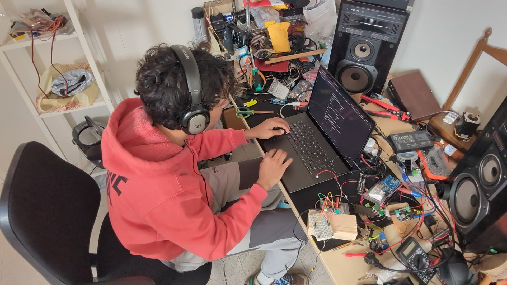
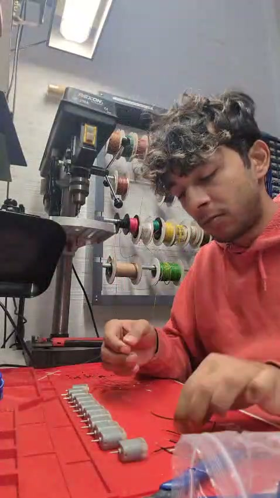
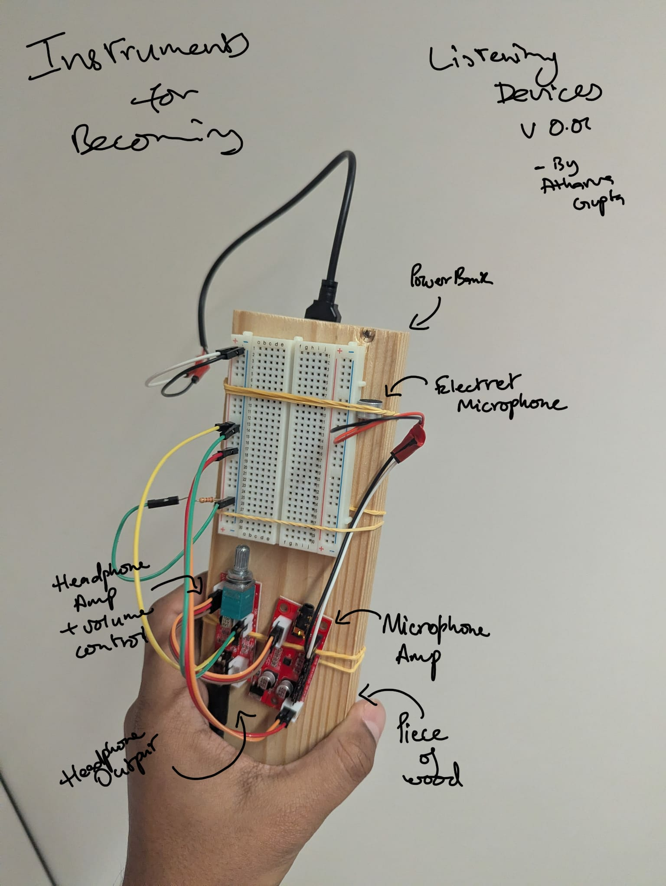
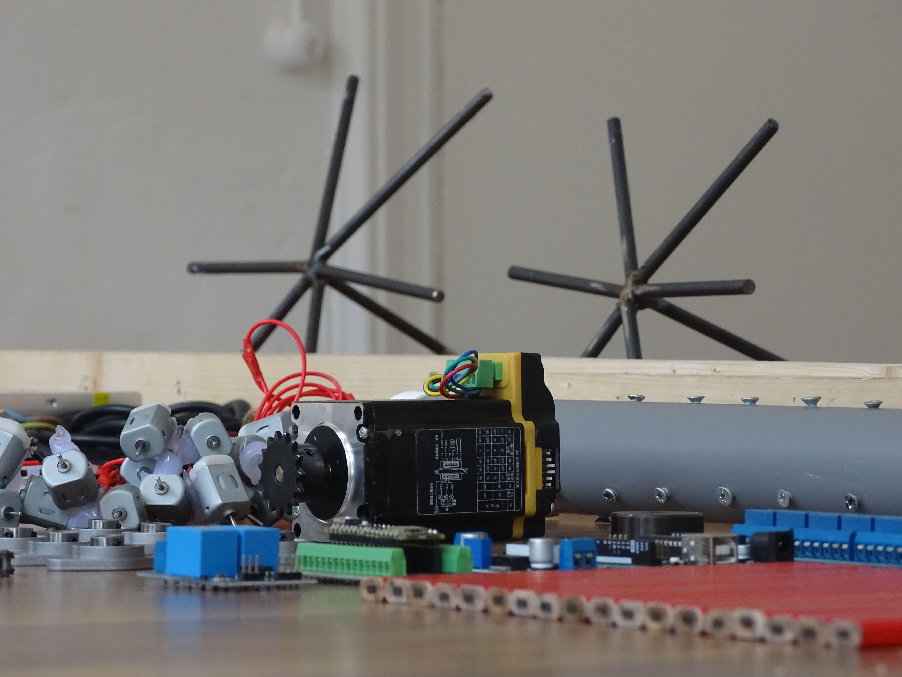

for
Becoming
part i:
positioning
chapter 1:
who i am and where i come from
i do not come to sound as a virtuoso musician or trained composer. a sound practitioner is a much better suited and preferred term. that is not to say that i don't like making “regular” music. i love playing around with synthesizers and daws and other instruments and software, and there are always little compositions happening on the side. as a child, i had classes for hindustani classical singing, which was a fun way to spend time with my mother, herself a passionate singer, writer, and poet. i tried to learn the harmonium, tabla, sitar, violin, all with little to no success and interest as a child. the rebel in me was inspired by idols like led zeppelin and the beatles, and i played guitar and bass through most of my high school years, in bands and in school orchestras, making tiny compositions that went nowhere in particular. my fingers are also just anatomically strange in a way that has never let me flow on the guitar the way i wanted to. so, i came at sound sideways, through the body's limits rather than its fluency, and through curiosity rather than technique.
i have not had any formal training in the arts or music in any way. i grew up in ajmer, in rajasthan (in india). as a single child, i was blessed with a lot of curiosity for the world around me, especially technology, and cursed with a rigorous science focused education and the cruel indian engineering trajectory explicitly expected of me (watch the tv show kota factory for context). i ended up pushing my way out of that, and after high school, i joined a bachelor's in psychology, sociology, and literature, at christ university in bangalore. with a wish for understanding the world around me, and possibly making a change, this was my first introduction to the humanities; and then a master's in arts, cognition, and criticism at the university of groningen, where i first officially encountered the present forms of contemporary art and artistic research. then came this madtech programme and an education in the practice of making art with technology, at the frank mohr institute.
life is very loud in india. sounds will find you everywhere, in any room, at any hour. and you will most definitely grow up calibrating to it and getting used to it. city environments especially traffic, loudspeakers from random events happening (religious, political, or otherwise), the specific density of people in close proximity at all times. you stop noticing most of it and your nervous system learns to filter it as background.
and then the move from ajmer to groningen changed my relationship with sound in ways i did not anticipate. not just quieter, but structurally different. fewer layers, longer silences, a city that actually empties at night. i had built up a tolerance i no longer needed, and losing the thing you were braced against is its own kind of disorientation.
and somewhere in there, because of the exposure to prolonged electronic music environments and raves, i developed tinnitus. a permanent high-frequency ringing that does not stop. what that does, practically and immediately, is make silence impossible. not as a philosophical concept but as a daily, inescapable fact. there is always sound. there is always something occupying a part of your brain with no control over it.
this was uncomfortable for a long time before it became useful. i stopped trying to get away from it and faced it head on, choosing to make my first sound sculpture as a “solution” to this condition. that shift, from resisting an uncomfortable sonic experience to staying with it and learning from it, is the same shift my practice and this document asks of you, the reader, and the listener. i did not design it that way. i noticed, later, that it was already true.

chapter 2:
what this is and what it is for
this condition of tinnitus is my entry point into this work. but it is one entry point among many, with the relationships i have had with and around sound. other musicians and makers arrive here through their own personal experience and conditions. the instruments in this practice are not (just) about tinnitus. they are the vessels through which we are able to become something more. something different. something new.
the research into these instruments does not follow a hierarchy. the concepts, the materials, the creativity, the stakes, the effects and affects, are distributed across everything. out of all of this come the principles this practice is built around.
this is a cyclical process of transformation, of becoming (deleuze and guattari, 1987) - physically, emotionally, sensorily - by the experience of sound and material.
the questions remain-
what conditions allow a listener to become part of the artwork's situation and not just a passive observer?
can the listener become a part of this cycle of transformation through these instruments?
i try to answer these questions through my making practice, constantly trying to maintain a balance between
intuition and
material logic,
transparency and accessibility,
sound and vision and our other senses,
conceptualisation and reality.
these are the directions and intentions guiding me towards problems to solve, and this document does not resolve many of these problems so much as inhabit them.
what follows is all of the following: a thesis, a practice manual, an academic inquiry, a practical methodology, and a philosophy of deep listening materialised through autonomous sound instruments; an attempt to codify my methodology for building autonomous kinetic instruments with rules and logical structures based on my positionality, and a directive for the readers who want to build on this understanding.
this document is an account of how i make my art, and what i have come to understand about what i am making. the making produces the understanding, and the understanding shapes what gets passed on. theoretical reflections and practical instructions are both outputs, in accordance with the inseparability of thinking and making in this practice. and of course, the reader is not expected to replicate my aesthetic choices or produce identical results. instead, the manual offers orientations, methods, and conditions to support the development of an independent practice from any point of origin. the framework arrived from the practice, and the practice began, as it always does, with a long time of not quite knowing what i was doing.
part ii:
working
chapter 3:
preparation
in this practice of making, most of the work for me happens before any building process starts. the ratio i find is roughly seventy to thirty:
seventy percent for preparation,
listening,
observing,
thinking,
collecting,
organising,
and thirty percent actually making the object.
but the number is not the point. the point is that most of what this practice is made of is not visible as the final work in the end.
this seventy
percent begins with a temperament.
i am a person who is easily bored and i need to be doing something with my
brain almost constantly, not necessarily making art,
just using the part of me that wants to discover something new,
find connections,
notice things,
turn something over and look at it from a different angle.
this is the gift and curse, borne from the tolerances i built up over the course of my life. it means the world keeps offering things to pay attention to. it also means that boredom has a specific texture for me: not emptiness but a restless friction that needs somewhere to go. that friction is one of the conditions the work emerges from.
and this seventy percent is not always purposeful. a lot of it is sitting around and just absorbing the world around you and being aware of all the different kinds information being thrown at you in the world, new and old; in a public space, in my studio with all the materials in front of me, zoning out, watching stuff and collecting information, finding abandoned materials on the street and collecting them for uncertain future use, getting high, thinking, and flowing, and feeling, and making notes right before falling asleep in the night, that is when the best ideas hit me. a lot of it is active documentation as well. partially to remember the art i am seeing and the moments i am working, and partially to legitimise the act of working itself. quick pictures and recordings, time lapses and many, many tiny notes in my notes app goes a long way in guiding this process.
this kind of attention is open in a way that directed attention cannot be, and it produces a different kind of knowledge: not conclusions but sensitivities, accumulated over time, which become available later when the making starts.
openness,
interest,
filtering,
observing,
documenting.


all of my parallel practices are part of this too. audiovisual performance, generative art, software stuff, music production, social media, making game mods and all sorts of tools, sketching, collaborating with other artists, sharing my experience and knowledge with others, helping them achieve their technical and artistic goals, all the huge and tiny bits of research: each trains a different dimension of that sensitivity. for instance, music production is learning to tell stories with and against sound, texture, expectation, the moment something shifts in the body before the mind catches up. touchdesigner is systems-thinking: making the thing that makes the thing, designing conditions and not outcomes. social media is, among other things, a way of understanding what captures and holds attention and what does not, which is directly relevant to making objects that aim to counter this. and what is happening in the world, politically, socially, in the feed and in the body, moves through all of it equally.
then there are the objects themselves. scraps of metal, disregarded wood beams, old motors, and new electronic modules.
this is a position about constraint. it is also a temperament. objects and materials in their raw form are interesting to me and they accumulate naturally. out of sight is out of mind, so everything needs to be in front of me, which means the space around me is always a kind of externalised thinking. an idea that can be realised from what is already in the room has a different energy than one that requires finding materials and components. the instruments in this practice were all built from what was accessible at the time, and that accessibility shapes what they are in turn.
chapter 4:
making
the thirty percent, when it finally arrives, moves fast. after all the accumulation of the seventy percent, the making itself feels almost automatic. the decisions have already been made, at the level of attention and sensitivity before the hands get involved.
every decision made in the creation of an artwork or instrument like this has a political dimension to it, whether or not the maker is aware of it. what to buy, what to salvage, where to source it, how much to spend, what to leave unfinished. the awareness does not change the politics. it only changes whether the maker is accountable to them. this is why there is a high level of self-interrogation involved in this practice.
the materials used in this practice are relatively cheap. the only exceptions are the electronics: microcontrollers, motors, wiring, sensors. these are purchased new because they involve electrical safety and functional reliability that cannot be compromised. everything else comes from what is already around and can be found. scrap metal, found wood, discarded objects. these are not substitutes for better materials. they are the materials, chosen because working with them means working with their actual properties and not imposing standardised forms upon them.
this is an ethic operating on several levels at once.
the first level is transparency. a raw object assembled from salvaged and cheap parts makes its conditions of production visible. it does not pretend to have been fabricated by professionals. high production value obscures something: the labour, the cost, the infrastructure required. that obscuring is a choice, and it has consequences for who gets to make work that is taken seriously and who does not. the art world has always gatekept partly through production value, and i am not interested in reproducing that gate.
transparency here means something more than not polishing. technology has learned to hide and has become increasingly smaller and less understandable. consumer electronics are smooth and sealed. software runs invisibly. the mechanisms that shape our environment are increasingly invisible to the people living inside them. for these instruments, the materials are what they are. cheap structural materials, exposed wiring, modules, and motors you can source online. nothing is enclosed behind a panel that says do not look here. you may need to know what to look for, but if you look, it is there. the system can be traced. this also extends to replicability. anyone with basic components, modest tools, and enough time to learn the tools can build something like this.
this does not mean the system will be accessible to all. if someone is not familiar with electronics, microcontrollers, or systems like these, they cannot understand a module or a circuit just by looking at it. especially in these cases, it is more important to make the systems behind these instruments more visible, not less.








the second level is something i grew up with and have been practicing all my life, before i had a word for it in any theoretical framework. in hindi there is jugaad: making do. solving a problem with what is in front of you, finding a way through constraint, because we cannot wait for ideal conditions that may never arrive. the world runs on jugaad. most of the world's making happens this way, and most of the art world's theory is built on pretending otherwise, centring certain polished aesthetics as a standard against which everything else is measured. found materials and d.i.y. construction is a distinct set of values about what making is for.
the ethic and the financial constraint arrived together and i cannot always cleanlily separate them. what i can say is that the constraint became generative long before i had the language to call it an ethic. making the work yourself, across every part of its construction, is how you come to know what the tasks ahead of you are. the artist who conceives and delegates loses the conversation with the material at the stage where it matters most: where things resist, where something behaves unexpectedly, where the object starts to teach you what it wants to become. gilbert simondon would recognise this: that technical objects carry their own logic of becoming, and the maker's role is to remain in conversation with that logic (simondon, 1980). that knowledge does not transfer through instruction or documentation. it only comes from being there, hands on, through the part where nothing is working yet. i cannot afford to outsource any of this, and i would not want to even if i could. in a materially grounded ethics of instrument-making, the economic constraint and the position are the same thing (redhead, 2025).
this is where the conversation with materials begins. when you do not get the intended output, the first move is not to fix it. it is to ask why. resistance is information. the behaviour of a motor changes depending on how much power you give it. run two motors from the same supply or control them with the same module and they interfere with each other in ways that are not fully predictable. either these are problems to solve by finding the correct settings, or they are a material logic to learn and play with. the instrument emerges from that conversation rather than from a specification written before it started.
the way a part of these instruments was conceived illustrates this directly. to get to the sound of pencils clicking together in one of my instruments, the process started with six servo motors on a piece of wood, skewers misbehaving in a way that looked and sounded interesting. experiments followed: skewers striking drying racks, then a dc motor left over from an unfinished magnetic stirrer project, then a 3d printed disc from which to hang a pencil. the pencil spun and struck. the original servo setup, refined, became another exploration. two instruments from one chain of failed and redirected experiments. neither was planned. both were listening. pattern and consistency hold all of this together. everything follows a pattern: gluing, wiring, assembly, all done the same way every time. when everything is assembled consistently, deviations and real variations become meaningful.
the aesthetic emerges from all of this as a consequence, not a decision made at the end. the raw, unfinished look of these instruments is what honest making looks like when the materials are found, the process is iterative, and i don't like to hide anything away.
the first birth is the conceptual moment when a possibility appears. something that might become something. it happens at random, for me usually it is a vision right before i am going to sleep.
a vision of a
structure,
an interaction,
a process or mechanism,
a percussion or connection,
or coded behaviour of some sort.
this signals the beginning of the process. something that stays with you without announcing why. the first birth is fast, and you will forget it more quickly than you expect, which is why i like to document everything i am able to. voice notes, timelapses, sketches, pictures of the workspace. the notes app at 2am, the camera before the desk is cleared. every moment spent around the work is part of the work. not as a record kept separate from the practice but as the practice itself, running alongside the physical thing.
the second birth is materialisation. this is the time for iterating and experimenting with the sounds and mechanisms and fitting them into the vision for the work. after it, the instrument is running without your hand on it. you will feel when it crosses. there is a specific quality to stepping back from an instrument and having it continue without you. that is also when it first surprises you and does something you did not design, produces a sound you did not anticipate. the instrument begins to teach you what it is.
the third birth is not optional, and it is not promotional. it is ontological. an instrument is not finished when you finish building it. the object on the workbench, wired and running, is at the end of one phase and waiting for the next. the next encounters will complete it. the instrument crosses from private object to shared reality. from something you made to something that exists in the world between you and others. without this, the instrument remains incomplete regardless of how well it runs. the work needs to be shared, lived with, and perceived to be real.
the instrument is a process that people enter. this also means the instrument keeps becoming. the person who stands close and the person who stands far are encountering different instruments. not because the mechanism changes but because the field of attention is different, the body is different, the duration is different.
chapter 5:
the instruments
these four instruments did not arrive as a set. they came one at a time, from different starting points, through different chains of accident and attention: a failing experiment that became something else, a material logic followed until it produced sound, a problem that refused to resolve cleanly and in refusing became interesting.
what they share became legible for me only in retrospect, which is
each one creates a
field of attention that rewards duration.
each one runs without a performer.
each one makes the cause of its sound visible in real time.
this description only became possible after the work existed. beyond those shared properties they are distinct objects with distinct characters, materials, scales of operation, and ways of positioning a body in relation to them.


rain reminders
the starting point is tinnitus. after years of exposure to loud music environments, i developed a permanent high-frequency ring that occupies the upper register of my hearing at all times. there is no silence. one of the few things that offers relief is white noise: broadband sound that fills the frequency range and gives the tinnitus somewhere to fit in. this is the irony the instrument is built on. noise caused the problem. noise is also one of the only solutions.
the first time i saw a rain stick was on a childhood science show, one of those programs where people made instruments in their backyards from things that were already around. it looked like the most accessible thing in the world: a tube, some material inside it, rotation. the sound it made was continuous and self-contained, a kind of indoor weather. that image stayed.
rain reminders connects these two things. it is a motorised rain stick, turning slowly enough that the sound it produces is a continuous field, a sweep that moves through its cycle every thirty to forty seconds and clears the acoustic space the way a white noise sweep in electronic music clears all frequencies. the rotation is mechanical and the sound is natural and the gap between those two things is where the instrument lives.
others have worked with rain sticks and rotating sound objects. yuri suzuki and douglas repetto have both explored the rain stick in a mechanical setting. the difference here is not the mechanism but the concept: rain reminders is not interested in natural simulation or musical abstraction. it is a direct response to a specific auditory condition, and its function is more of a sensory recalibration than aesthetic contemplation. the white noise that caused the damage is also the white noise that offers relief. the instrument holds that contradiction without resolving it.
the construction is built around a nema 23 stepper motor controlled by an arduino nano, driving a pvc rain stick loaded with screws, rice, and mung beans. power is transmitted through a gear and chain system, mounted on a wood beam within a metal frame, with a pipe clamp and coco mat completing the assembly, running on a 24v power supply. the contents of the rain stick change the sound substantially: different grains produce different textures, different densities of fill change how the material moves. the industrial look of the pvc and the metal frame sits against the organic quality of the sound in a way that is not accidental. the object shows you exactly what it is and how it works, and the sound it makes seems like it should come from somewhere else entirely.
rain reminders was recently shown publicly at the lets gro festival in groningen. the people who came were not primarily an art audience. they were the general public: families, people passing through, people who had not come specifically to encounter sound art and did not arrive with the conceptual framework that an art audience might carry. some of them stopped. some listened for a long time, longer than i expected, longer than felt comfortable to watch. some of them lay down on the floor underneath the instrument and stayed there.
that was when rain reminders became what it was built to be. not in the workshop. not in the first test run. not in the documentation. in that room, with those people, with bodies on the floor receiving vibrations through the ground, attention suspended in a way that had nothing to do with understanding what the instrument was and everything to do with what it was doing to them in that moment.
the listener brings the work into contact with the external world by deciphering and interpreting it, and in doing so adds their own contribution to the work. this is precisely what happened at lets gro. those people lying on the floor were completing the artwork. their bodies in the space, their sustained attention, their willingness to stay and receive. the instrument without them was a mechanism. with them it became a situation.
materials: steel frame, wood beam, pvc pipe, screws, black rice, mung beans, arduino nano, breakout board, nema 23 stepper motor, gears and chain, pipe clamp, coco mat, wires, 24v power supply.


relentless
the origin story is in the previous chapter: six servo motors misbehaving on a piece of wood, experiments with kebab skewers and drying racks, a leftover dc motor from an unfinished magnetic stirrer project, a 3d printed disc as an uncomplicated way to attach a hanging pencil. the pencil spun and struck in an unusually aggressive manner.
the first public showing for this work as a part of the whole instruments for becoming composition was at np3 research gallery, as part of the re:arrange exhibition. the version that went in was held together with tape, hot glue and hopes. the electronics workshop was inaccessible during the build period so nothing could be properly soldered, relays were used instead of mosfets, wired with tape joints and low-gauge cable not rated to carry the current the motors needed to function properly. the wiring heated up under load. the relays gave out during the run because they were not rated to be turned on and off as many times as i required it to. strings broke. discs fell off their motors. motors that had been hot glued to the star frames came loose and dropped. the piece was visibly disintegrating across the duration of the exhibition, and visitors were watching it happen.
i am trying to be precise about this because the failure was not incidental to the work, even though it was not planned. the piece was already doing something to people through the experience of waiting, through the gap between what they expected and what the piece actually did. and then the object itself started behaving in ways that confirmed every suspicion a visitor might have had that something was wrong, that the piece was not working, that the situation they were standing in was broken. some people said so directly.
the piece was running on its own schedule. it has been programmed to do that. the randomised motor cycles, the unpredictable contact sounds, the refusal to perform on demand, and the anticipation for that performance, were all compositional decisions. the tape and the falling discs and the failing relays were not. and yet, in the room they read the same way. the object was doing what it was doing regardless of what anyone expected from it, and falling apart turned out to be continuous with that.
the emotional register around this instrument runs high in both directions and the intensity really surprised me when i first saw it. staying with relentless long enough means going through a recognisable arc. actively waiting. anticipation builds in a way that has physical weight, and people who stayed for this work were holding something in reserve, attention collected and pointed at the object, waiting for it to confirm that the wait was worth it. when a motor finally cycled and a pencil struck and dragged across the floor the response split hard. some people felt a release that seemed almost physical, a satisfaction proportional to the duration of the wait. others felt a flatness, a mild deflation, as though what had finally happened did not match what they had been so patiently waiting toward. the middle response almost never happened.
some of that intensity has roots in what people bring to the piece before it does anything at all. the hanging form, moving elements, ceiling-mounted structure: these call up associations. wind chimes. crib mobiles. chandeliers. (kinetic) sculpture seen in other contexts. people arrived with a preconception of how something like this should be presented and what it should look like when it was working.
some felt it should hang higher so it could be seen from below, that there is a wrongness in the pencils dragging on the floor. some who only passed by the work thought the piece was not functioning and said so. the word they used was disappointment but that is not quite accurate. disappointment implies the piece tried to meet an expectation and came up short. what actually happened was that the piece did not try. it ran at its own height, on its own schedule, making the sounds it made when it made them, and the gap between that and what a visitor had imagined stayed open. unresolved. they stood in front of something that was neither broken nor finished, and that condition produced a real discomfort, the kind that is hard to name quickly and does not go away when you walk to the next work.
at np3 the piece was also literally falling apart and somehow that increased the autonomy of the object itself. what the piece became, through people encountering it, is an instrument for a particular kind of attention. not rewarding a glance, not performing. it runs, and waiting for it tells you something about what you expected from it, and what you expected from it tells you something about what you think an artwork owes you. that is what i watched happen repeatedly in the room, with a piece that was disintegrating, running on undersized wire, dropping its own components, and still doing exactly what it was built to do.
the next version, for the graduation show, draws a clear line between those two things. a single metal bar replaces the star frames; eighteen motors spaced evenly along its length. wiring runs along the bar, soldered, routed, using components rated for the load. mosfets replace the relays. one line, eighteen points, each element placed. all of this is in an effort to make the object visually and compositionally continuous with the rest of the series, the same ruled sparseness.
the structure hangs from the ceiling and drops far enough that the pencils graze the ground. the instrument occupies the full vertical register of the room, ceiling to floor, and the contact point at the bottom is where the sound is made. when a motor cycles up a pencil spins against the floor, dragging, clicking, scraping briefly before the motor winds down. the room returns to what it was before. this happens at unpredictable intervals because the code assigns each of the nine motor pairs an independent randomised timing sequence. they do not all run at once and no pattern repeats within any duration a visitor is likely to stay for.
in the situation created by this work, what the room contains most of the time is quiet, with a low continuous hum from motors idling, a presence more atmospheric than sonic. the contact sounds when they come are brief. a click, a scrape, then nothing again. this is where the piece starts to do something to people.
materials: steel bar, dc motors, mosfets, pwm controllers, soldered and routed wiring, 5v power supply, 3d printed discs, macramé thread, woodcutter pencils.


.jpg)
the listening devices
the listening devices did not begin as an instrument in the same sense as the others. the a-kerk in groningen, where instruments for becoming will be shown as a complete installation for the first time, is a large stone church. reverb tails are long, sound bounces off every surface, and a graduation show means hundreds of people moving and talking inside the same space across multiple days. the sonic fields that rain reminders and relentless generate are quiet, fine-grained, and built for sustained proximity. in a room already full of noise and other people's fields of attention those properties become liabilities. the field gets swamped.
the first response to this problem was a handheld device: an electret microphone circuit, a small amplifier, headphones. point it at the rain stick and the individual grains become audible. hold it near the motors and the hums and overtone structures open up. direct it toward relentless and the phase differences between motors, which wash out at room scale, become distinct. each collision of the pencils, through this device, increases in scale a thousand-fold. the device worked as a kind of sonic microscope, letting a listener move close to a field that would otherwise be swallowed by the room.
giving it to people to try produced a fairly consistent response. the experience of hearing your own environment suddenly amplified, every texture suddenly present, conversations from across the room arriving in full detail, was for some people genuinely overwhelming. the sensation of listening that much all at once was too much to stay inside for long. for others it was the opposite, a kind of revelation, the room they had been standing in becoming a completely different acoustic object. what both responses shared was that the device changed the physical and perceptual relationship between the listener and the space.
but the handheld version has a problem for the graduation show context. many visitors across four days, an uncontrolled situation, a fragile circuit. it will not survive that. and beyond the fragility there is a more interesting question about what the device is actually for: whether the point is to give each visitor agency over where they point their attention, or whether the curatorial act is to decide that in advance and place the microphones deliberately.
the fixed version answers that question in a particular way. eight to ten microphone circuits placed in close proximity to specific points within each instrument: near the rain stick, near the stepper motor and the chains and gears, near the motors on relentless, near the pencils at the contact points on the floor, near the mosfets, near the power supplies.
this last category is the most interesting for this decision. the fans in the power supplies, the electromagnetic hum of the mosfets switching, the faint ringing of components under load: these are part of what the instruments are. sonic byproducts of the systems that make the visible behaviour possible. the microphone placement makes a claim about where the instrument ends. it does not end at the rain stick or the spinning pencil, extending into the electronics, the infrastructure, the power moving through the object.
the headphone stations sit within the installation space. the intended setting for now is a large rug on the floor, six to eight headphones available, people sitting in a circle around the instruments.
rain reminders was understood most fully at lets gro when people lay down on the floor and received it through their bodies. the listening devices, in their fixed form, are designed to make that possible deliberately.
the sitting position, the headphones, the circle: these create a ritual proposition.
what the device also does, which becomes clear the moment someone is holding one or wearing one, is make the act of listening visible. a person with headphones on, oriented toward a quietly humming object, is doing something legible in the room. their attention has a direction. the act of listening becomes a posture, a gesture, something others can see, recognise, and decide whether to join.
this is where the listening devices become more than a solution to an acoustic problem. the problem was real and the solution is practical. but solving it required deciding what counts as the instrument, where its boundaries are, what a listener's body has to do with it, and what the room looks like when listening is treated as something worth designing for.
materials: electret microphone capsules, max9814 preamp circuits, max4410 amplifiers, routed wiring, headphones, fixed mounting hardware, power bank.


a note on failure
ringing and buzzing
this came from the same chain of experiments as relentless: six servo motors misbehaving on a piece of wood, skewers striking things, a question about what the servo could do if given the right surface.
i was not in a good place when i was building this. the graduation deadline was close enough to feel like pressure and far enough away to feel abstract, and i was making things to make things, not because i knew what i was making. ringing came from that, a grasping. i had materials and i had motors and i put them together hoping something would emerge that i could point to. sometimes that works. here it did not.
the steel rod structure was already made. i did not shape it, did not choose the dimensions for any reason, did not build the thing that would make the sound. i attached motors to found material and tried to call it an instrument. what i actually do, making the rain stick screw by screw, positioning the pencil structures for relentless one by one, requires passing through the material in a way that changes both the object and the understanding. this experiment skipped that.
the sound confirmed it for me. too small, too shrill, and not interesting enough to justify looking at it or hear it happen. the voltage fluctuations in the servo motors created variation, but there was nothing there to sustain attention, which is the one thing i need an instrument to do. i am interested in that unpredictability as a phenomenon. it tells you something real about how these motors work, about what happens at the edge of tolerance, but an installation context where people move around it unsupervised is not the place to explore it. the instrument executes and it does not generate conditions. it did not earn its place in the room.
materials: steel rods (various dimensions), jute thread, super glue, servo motors, wood skewers, arduino, adafruit servo controller, 5v power supply.
halo
i found the bell halo in a kringloop. a circular arrangement of small bells, designed for ceremony or decoration. an idea arrived: what happens when an object made for ritual is motorised and left running without one, moved by a machine rather than a body, repeating without occasion or end.
the bells were already arranged in a circle by someone else, for some other purpose. i could attach a motor and spin them but i had no hand in how they came to make sound, no decisions embedded in the object, and no history of attempting and adjusting. that absence was stinging me the whole time i worked with these materials. i kept looking for a structure that would give the spinning something to work against, some frame that would turn the repetition into something with shape, to no resolutions. i got annoyed at myself for a while, convinced that the right solution existed and i was missing it. eventually i accepted that what i was missing was a different starting point altogether. the idea is good. the material was wrong, or i was not ready for it, or both. it is in my notes now, which is where things go when they are worth returning to but not worth forcing. the parts will go into something else.
materials: nema 23 stepper motor, 6.35mm to 8mm coupling, 20cm x 8mm steel rod, assortment of small bells, wires.


part iii:
understanding
chapter 6:
the conditions
these instruments are particular. the conditions that make them necessary are not. each object described in the previous chapter arrived through its own chain of accident and material logic. those origins are specific and untransferable. but the instruments exist in the world with a specific character, and that character shapes what it means to make them, show them, listen to them, and ask someone to stay with them, without agenda or outcome.
making is already a political act, whether or not you or i intend it that way. i did not, at first, intend it that way. i was following curiosity and material logic and the particular discomfort of a body that cannot find silence. the politics arrived later, in the same way the theory did: as a recognition of what was already true. what i was making turned out to be a refusal,
of speed,
of optimisation,
of the expectation that an encounter should produce something measurable.
and that refusal happens inside a specific set of systems that have a direct interest in attention, and what that attention is for.
attention as contested territory
we live in a moment defined by the engineered fragmentation of attention. social media platforms, algorithmic feeds, and notification systems are not designed to inform or connect. they are designed to capture attention and hold it long enough to extract economic value from it. attention is the commodity. the feed is the factory floor.
the boundary between productive and non-productive time has been systematically eroded. there is no longer a clear off switch. the demand for continuous presence, continuous output, continuous engagement has colonised the hours that used to belong to boredom, rest, wandering, and unstructured thought. what gets lost is not just time. it is a particular quality of attention, and a capability to harness sensitivities in the midst of all the overstimulation.
a distinction can be made between two cognitive modes. one is hyper-attention, a fragmented way of processing shaped by fast, continuous streams of digital input. the other is deep attention, the ability to remain with a single object or experience long enough for a transformation to occur. modern infrastructures are engineered to support the first and systematically undermine the second.
this is where sound art enters as friction. to redirect attention toward something slow, physical, non-optimisable, and non-consumable is a political act as much as an aesthetic one. appeals to slowness and resonance can themselves be absorbed by the same systems they claim to resist, repurposed as wellness content and productivity tools, as another way of managing populations more efficiently. wellness retreats, meditation apps, algorithmically curated ambient playlists for focus, binaural beats for productivity. slowness is not inherently subversive. the question is always what the slowness is for and what it asks of the person inside it.
what these instruments ask for, is sustained, embodied, non-directed attention. present, open, aimless. not the attention of consumption, where you wait to find out what something means or whether you like it. not the attention of self-optimisation, where you submit to a sonic environment in order to perform better afterward. something closer to what pauline oliveros called deep listening: an expansion of awareness to include the entire sonic environment without filtering it for relevance or reward. the instrument does not give you something to take away. it gives you a situation to be inside, without agenda, without output. that, right now, is a genuinely countercultural proposition, not because it announces itself as such, but because it wastes time in a way that cannot be recuperated.
mindfulness as refusal
sound has long been entangled with power and the structuring of behaviour, prior to its codification as language or symbolic meaning. it can mark territories, synchronise bodies, and channel collective action.
attali (2014) argues that noise has always preceded political transformation. the organisation of sound reflects and anticipates the organisation of society, and that those who control sound control a form of social order. the church bell divides the day. the military drum synchronises bodies into collective action. the factory siren marks the boundary between productive and non-productive time.
russolo (1987), writing from inside the futurist project, heard industrial noise as the sound of a new world forcing itself into existence. the roar of machines as evidence of power reorganising the material environment.
goodman (2012) takes this further: sound has been deployed not just as symbol but as weapon, a direct physical force used to control territory, disperse populations, and produce states of unease in targeted bodies. from the use of infrasound in crowd control to the weaponisation of music in detention settings, the body is the target and vibration is the mechanism.
what these examples share is that sound operates politically at the level of the body, before meaning, before interpretation. that is precisely what makes it available for the kind of practice described here, and precisely what makes it a political act.
at the same time, sound is not inherently political. as a material phenomenon, it is vibration, frequency, amplitude, duration, resonance. it becomes political at the moment it enters consciousness when it is interpreted and acted upon. before that threshold, it is physics. after it, it is inseparable from attention, meaning, and power.
mindfulness began as a practice of returning attention to the body, to breath, to the present moment, a technology of the self oriented toward awareness. what it has become is an app. headspace. calm. insight timer. the interface between a person and their own nervous system is now structured by subscription models and streak counters directed towards productivity. a tool intended to reduce mediation has itself become highly mediated. the simulation replaces the original so completely that the original begins to feel inaccessible, even unnecessary. the mediated version of calm becomes more familiar than calm itself, and the felt sense of a mindful breath is learned through instruction, rediscovered through the body.
the instruments in this practice refuse that condition. instead of positioning themselves between the individual and their experience, they construct a situation and leave the participant inside it. the body is not treated as an object to be optimised, but as the site where the encounter unfolds. what emerges there belongs entirely to whoever is present.
chapter 7:
what makes an
instrument for becoming
kinetic and sonic sculptures assembled from salvaged parts, running without a performer, designed to create a listener's experience in a way that produces nothing measurable. naming the politics and understanding the object are two different and necessary operations. the sections that follow are about what these instruments actually are, how they work, what properties they share, what it means to encounter them.
instrument as a situation maker
the instruments in this practice are not objects in the conventional sense. in deleuze and guattari's (1987) terms, they are haecceities: defined not by what they are made of, but by what they do, how they move, and what they make possible in the people and spaces around them. a haecceity has no subject or object, only speeds, affects, and capacities. it is an event. the instruments operate this way. they tend toward situation-making rather than message-delivering. each one invites a field of attention that is spatial, temporal, and bodily simultaneously. each one crosses a threshold into autonomy, the point at which it no longer needs you to function. each one opens toward extended durations without exhausting the attention of whoever is present. and each one positions the body of the listener not as a receiver but as a transducer - vibration becoming movement becoming thought, the boundary between instrument and person becoming genuinely unclear.




if sound acts first as a physical force, then the instrument is already a material participant in the event. since sound operates at the level of physical matter before it operates at the level of meaning or representation. what follows from this is practical: if the instrument is a material participant, then decisions about what it is made of, how it moves, and what it is allowed to do are not secondary for the experience. they are also a part of the experience of the situation.
in this practice, an instrument is a way of arranging conditions: mechanical, material, spatial, and temporal conditions that allow sound to happen in particular ways. the instrument does not deliver a message. it creates a situation in which something can unfold.
in practices oriented toward control, reproduction and engineered performance, the goal is to produce something you intended, something you could write down or replicate. an instrument for becoming is different as it is not designed for control. it is designed to generate conditions in which sound emerges from material behaviour that has been set in motion but not fully determined. i seed a structure and allow the outcome to be contingent and unknowable.
what makes this possible is visibility. these instruments make their own behaviour available to perception in real time. movement, friction, impact, and instability are not hidden behind speakers or interfaces. when sound is produced, its cause is right there. the listener does not hear first and imagine later. they witness sound coming into being as a material event. small mechanical differences between nominally identical components become the generative principle, and imbalance is the condition of production itself.
this also reframes what the making actually involves. thinking of the instrument as a situation-maker shifts the maker's role away from composing outcomes and toward shaping conditions. decisions about materials, speed, friction, spacing, and autonomy become as consequential as decisions about pitch or structure. the situation is still designed responsibly for a specific purpose, even if what unfolds inside it cannot be predicted.
for the listener, this approach opens a different relationship with technology. the machine, transparent in its functioning and raw in its aesthetics, is performing, expressing, behaving. when freed from the obligation and expectation to be useful, these machines can play, operating outside human intention through a kind of wordless functioning. their capacity emerges from a margin of indetermination, a sensitivity to external input that allows them to act as technical individuals. within this margin, what unfolds resembles a form of nonorganic life, a material vitality independent of biological or expressive origin. listening becomes a practice of staying with this behaviour as it shifts over time. the body, in this situation, functions as a transducer of affect, converting waves and vibration into meaning, movement of thought and movement of the body, actively participating within the same system as the instrument.
an instrument of/for becoming
not every object that produces sound qualifies as an instrument of becoming. what follows is an attempt to name what these instruments share: not as a checklist arrived at in advance, but as a set of properties that became legible only through making and showing the work. they are practical consequences of my positionality on what sound is, what listening does, and what an encounter between a body and a machine can open up.
visible origin.
the physical cause of every sonic event must be observable in real time by anyone present: not inferred, not imagined, but seen happening as it is heard happening. this is a deliberate anchoring for the listener in the proximity of these instruments. schaeffer (2017) describes the acousmatic tradition as one that asks the listener to attend to sound while abstracting away its origin, to hear without seeing. for this practice, that separation would be a loss, so it moves in the exact opposite direction. the source is always present. the sound is always an index of a physical event. what you hear is inseparable from what you see happening. the visible cause prevents the sound from becoming a disembodied object, abstracted from its making. it keeps the encounter material, grounded in the fact of the event. when source is hidden, the listener defaults either to causal inference, trying to reconstruct what produced the sound, or to reduced listening, bracketing the source entirely. both are legitimate modes, though neither is the one this practice is built around.
semi-autonomy.
the instrument must operate without constant intervention from a performer or operator. an instrument that requires a performer mediates the listener's experience through another human presence, shifting attention toward the intentions and actions of the person operating it. the dynamics of dramaturgy, performance and human interactions take over. an autonomous instrument removes this mediation. the listener is left alone with a machine that is not addressing them specifically but simply behaving through the programmed entropy. just as simondon (1980) describes technical objects as having a margin of indetermination, a sensitivity to context and input that allows them to act as individuals rather than fixed tools. it is within this margin that the becoming occurs. sonic events emerge from the interaction between code, components, materials, and environment in ways not fully determined in advance by anyone, in the gap between what was designed and what actually happens.
temporal richness through metastability.
the instrument must sustain and evolve its sonic behaviour over extended durations without exhausting attention. metastability describes a state suspended at the edge of resolution, where a system remains slightly unresolved and capable of sudden spontaneous shifts without collapsing into stasis or disorder. an instrument in a metastable state is always in the process of finding equilibrium and never quite reaching it, which is precisely what keeps attention engaged over time. these instruments have no meaningful beginning and no meaningful end. they are entered and exited, not started, and stopped, and each duration of encounter produces a unique perceptual experience. oliveros (2005) describes this quality of sustained, open attention as something that has to be cultivated over time, and the temporal structure of these instruments is designed to support exactly that cultivation.
non-neutral materiality.
every decision made in the construction of an instrument is a political act, whether or not i am aware of it at the moment of making the decision.
what to buy,
what to salvage,
where to source it,
how much to spend.
the awareness does not change the politics. it only changes whether i, as the maker of the artwork, is accountable to them.
the only components purchased new in these instruments are electronic: microcontrollers, motors, wiring, sensors. this exception exists because electrical safety and functional reliability are not areas where constraint should introduce risk. everything else, structural elements, housing, resonating surfaces, comes from what is found, salvaged, or repurposed. scrap metal, found wood, discarded objects. these are not substitutes for better materials. they are the materials, chosen because working with them means working with their actual properties and not the standardised forms available around me. lauren redhead observes that instrument makers working with found and variable materials develop a different relationship to their objects, one shaped by what is already there rather than by a specification. (redhead, 2025) that relationship is one i recognise.
but the found-material position is not completely clean. there is a tension between salvaging locally and sourcing cheaply from aliexpress. both refuse the premium design market, and both operate outside the logic of refined production. but they do so differently: one is embedded in place and in what already exists there, the other is embedded in global supply chains and in the labour conditions that make cheap components possible. i hold both of these simultaneously and i do not find myself in the position to resolve the tension. which is why i choose to name it instead.
finish and refinement are not neutral aesthetic choices. they are legible markers of resource access. a highly refined instrument says: i had time, appropriate tools, and the right materials. a raw instrument assembled from found objects carries the terrain of its making in its surface.
class,
access,
geography,
constraint,
this extends beyond material into every domain where access is uneven.
who is literate in
a given aesthetic tradition,
who has the physical capability to engage with a particular sense or interface,
who has been socialised into what counts as a legitimate instrument or a
legitimate venue or a legitimate practice or legitimate art.
the questions keep compounding.
a work made this way does not or cannot always resolve these questions. it recognises them, refusing to proceed as though they are not there.
interaction.
the audience-as-producer dynamic is integral. a body in the space alters acoustics. presence shifts the field. humming introduces frequency. proximity changes pressure and texture. staying transforms the listener from observer to participant. this is political in its operation more than it is political in its declaration. a body that remains, that does not skim or optimise, withdraws from systems that demand fragmentation and constant movement. staying is the act. presence is the argument.
physical presence cannot be virtualised. low frequencies cannot be transmitted as bodily sensation through a screen. the haptic experience of vibrating material cannot be reproduced remotely. samuel thulin (2019) describes this as the irreducibility of mattering processes in sound, the ways in which sonic encounter depends on co-presence and cannot be fully substituted by documentation or mediation. the requirement of being physically present, in a specific room, with a specific object, over a specific duration, resists the drive toward frictionless and on-demand experience. it asserts the necessity of the body, the room, and uncompressed time. in a context where experience is increasingly dematerialised, this insistence carries weight. on its own, it remains a position. it becomes practice when these instruments are shared, when encounters occur publicly, with people who may not be seeking them and may not have language for them. that is where the work begins.
but presence is not a given. it is not something that happens automatically because a person is standing in a room with an object. the body arrives carrying everything it has been trained to do with sound: filter it, extract information from it, evaluate it, move on. ihde (2007) describes how perception is always already shaped by learned habits of embodiment, the orientations a body has developed toward the world before any conscious decision is made. oliveros (2005) makes a similar point from a practice perspective: deep listening is something that has to be cultivated, because the default mode of hearing is extractive and functional. what these instruments ask for is something more sustained than that and understanding what they ask for means understanding what the body actually does when it encounters sound, before any decision about what to do with it has been made.
chapter 8:
sound,
bodies and perception
start with a body in a room. not an abstract body, not the phenomenological body of the textbooks, but a specific one, a specific person: tired or rested, shoes on or off, having walked fast or slowly to get to the same location as you. this body arrives already in process, already adjusted to the acoustic conditions of the corridor and the stairwell before it crosses the threshold. it has been listening, in the broad sense, the whole time. what changes when it enters the space is not that listening begins but that something different is available to be listened toward.
jean-luc nancy (2007) draws a distinction that is relevant here. hearing is functional: the ring of a phone, a name called across a street, a timer going off in another room. the body responds and the event is over, processed and discharged. listening is something else, a state of being oriented toward something that has not yet delivered itself, that is built on the promise of resolution. most of us spend most of our time hearing. we are efficient. we extract what is actionable and let the rest pass. this is, as nancy suggests, a kind of permanent thinning of experience. for us human beings in this time and age, this is what the act of paying attention has been trained toward.
the instruments in this practice are not designed to be heard. they are designed to be listened to, which means they resist the move toward resolution. they do not offer the kind of sonic event that completes itself and permits you to move on. there is no promise of a resolution from a listening experience. they repeat without repeating exactly. anything that happens in that duration depends entirely on the interactions of the bodies and the instruments.
sound before interpretation
ihde (2007), in listening and voice, makes the point directly: we do not hear with our ears. we hear with our whole body. bass notes reverberate in the stomach, vibrations move in through the feet, sound is a penetrating presence that physically invades. it vibrates air, travels through walls, passes through skin, moves bone and tissue. like any other force of nature, we do not get to choose which sounds comes to us and which ones do we pay attention to.
the body makes decisions before consciousness emerges, with sound arriving first. the body is an active site where sound becomes an experience before thought. low frequencies settle into the chest and stomach. a distant mechanical hum occupies the mind without invitation. repetitive rhythms entrain the breath; textures tighten or release the body. infrasonic frequencies below 20hz can generate a diffuse sense of unease or dread. physics meeting flesh.
meaning from sound arrives later. there is a brief interval where vibration becomes sensation and sensation becomes perception. in that interval the body resonates, filters, and adjusts. resonance is not passive but an alignment between sound and structure, and every body responds differently. the same low drone can ground one person and unsettle another. this is less about taste and more about physics meeting a particular body in a particular moment. the body is stretched toward sound, seized through a shiver or contraction, reaching toward meaning that has not yet formed. (cox, 2011) sound here is not primarily communication or expression but frequency, amplitude, duration, resonance, a physical event in itself.
the three senses in play
at least three sensory systems are at work whenever you stand near these instruments, and the interesting thing is not that there are three of them but that they cannot be cleanly separated.
hearing is the obvious one. frequency, rhythm, texture, spatial location, the way a sound moves when you move relative to its source. but hearing never operates on its own. equilibrioception, the vestibular system, the sense of balance and spatial orientation, lives in the inner ear immediately adjacent to the cochlea. these two systems share real estate and they share function. low frequencies work across both simultaneously, shifting groundedness and producing a subtle pull toward or away from a sound source that operates entirely below conscious decision making. what you might notice first, standing near one of the instruments, is a bodily orientation. a leaning. a finding of your relationship to the object. this is already happening before your mind has caught up to what is occurring.
interoception works differently. it is the sense of internal state: heartbeat, breath, the quality of muscular tension, the felt condition of the gut. sustained sonic environments synchronise with these internal rhythms in ways that are rarely fully conscious. breathing slows or quickens with tempo and texture. a particular resonant frequency settles into the chest and becomes, after a while, indistinguishable from the body's own vibration. ingold (2011), writing about the body moving through an environment, describes something he calls wayfaring. the organism grows along the lines of its path, taking shape through movement. standing still in an acoustic field is its own version of this. the body is not waiting to receive an experience. it is being made, continuously, by the encounter.
the interaction between these three systems, auditory, vestibular, interoceptive, is where what gets called atmosphere actually comes from. atmosphere is not a property of a space. it is not something the instruments project. it is what emerges from the convergence of all these sensory responses in a body that is permeable, that cannot choose not to be affected by what it is in the presence of. a body that ran up the stairs to get here will meet a different atmosphere than one that arrived slowly and stood in the doorway for a moment before entering. you cannot standardise this. the listener's body is the site where the work takes place.
for a maker, this is uncomfortable and clarifying in equal measure. duration, proximity, and movement are the actual materials, not the sounds themselves. what you can compose is conditions.
fields of attention
every instrument generates a field of attention around itself, a spatial and temporal zone in which sound reshapes what the body is capable of attending to. don ihde (2007) describes the structure of any perceptual field as a hierarchy: a focal core, a peripheral fringe that situates it, a horizon beyond which lies the edge of the perceptible. what is particular about the auditory field is that it encloses. unlike vision, which has a forward orientation and an edge you face, hearing surrounds. you are at the centre of it.
to design an instrument is to design a field. and the field is not simply the sound. it is the total situation: sound, motion, visibility, the spatial relationships between objects, the quality of the light, and the listening body's continuous adjustment to all of this at once. the instruments do not fill a space with content. they alter the conditions under which anything in the space can be attended to.
these fields are not static, and they do not stay the same across the duration of an encounter. what is inaudible when you first enter becomes present after twenty minutes. what felt overwhelming close up fades into texture as the body habituates and then, if you stay, becomes strange again on the other side of habituation. these temporal patterns are only accessible through duration. a visitor who stays for five minutes and a visitor who stays for forty-five minutes are in different works, even though nothing about the instrument has changed. when multiple instruments share a space their fields interact, sometimes conflicting, sometimes reinforcing, producing patterns that neither generates alone. placing instruments in space is a compositional decision at the scale of the whole installation, and it works across time as much as across distance.
the transparent ear
becoming does not belong to a subject or an object. it exists between them, as a shared process of mutual transformation. you do not become something. becoming is entering into a relation that changes what you are capable of, temporarily, for as long as the relation holds.
sound is unusually well suited to this because it is never fixed. it exists as vibration, as continuous variation, as movement through and across bodies. when you stand near one of these instruments long enough, something shifts. it is not dramatic. it is closer to what happens when you have been listening to rain for twenty minutes and can no longer tell whether you are attending to it or it has simply become the condition inside which you exist. the boundary between the listening body and the sound field becomes genuinely unclear. this is not metaphor. it is a description of what the three sensory systems are doing: the auditory field, the vestibular system, and the interoceptive body are all responding to the same sonic event simultaneously, and the combined effect is a reorganisation of where attention is located. the instrument becomes-sound in real time. the listener becomes-listener in a new way. both are altered through the encounter.
i call this condition the transparent ear, adapted from emerson's transparent eyeball in his essay nature: "i become a transparent eyeball; i am nothing; i see all; the currents of the universal being circulate through me." emerson describes a state of perception that is absorbent, in which the individual becomes continuous with the world rather than separate from it.
i should be careful here. the transparent ear is not a claim for some pure or pre-linguistic mode of hearing. immediacy and presence can be romanticised in ways that gloss over the sociohistorical conditions of listening: who gets to listen, under what circumstances, with what bodies. it is offered instead as a practical orientation. a loosening of the habit of listening for meaning, language, or music, in favour of listening as sensory encounter, stimulus, effect, relation. in this condition the body becomes a transducer. sound is no longer an external object to be interpreted. it becomes a force that reorganises perception from within, and the instrument is the situation that makes this reorganisation possible.
purposeful purposelessness
purposeful purposelessness names a specific paradox. the purpose lies in setting up a system or process. the purposelessness lies in the outcome, which remains open and unforeseen. the artist does not transmit predetermined content but constructs conditions and attends to what unfolds. cage (brecht et al., 1970) built an entire practice around this position: scores that specify a situation, instructions that initiate a process without determining its outcome. action here is defined by the absence of a known result. it cannot be evaluated through success or failure, only encountered as something that occurs.
it does not claim that activity must justify itself through production. pencils spinning. wood striking metal. motors moving slowly. a rain stick turning in an empty room. the work is the doing. the encounter is the thing itself. ono (2000) works in this register too: instructions that hand the work over entirely, that make the act of following the instruction the artwork.
machines align with this condition because they do not require meaning to operate. they run. freed from utility, they enter a mode that resembles play: activity without agenda, without concern for whether it is worthwhile. tinguely's machines (stedelijk museum amsterdam, 2016) make this explicit: kinetic objects that serve no purpose, which celebrate their own useless motion, which break down and malfunction as part of their operation. some objects follow their own internal logic, outside human rational frameworks. aligning with that logic allows a shift away from the demand that everything must justify itself through outcomes. the instruments in this practice occupy that position. they do not serve utility. they run.
practically, this means the encounters these instruments produce resist absorption into systems that depend on measurable outcomes. there is no trajectory of improvement, no before and after, no optimisation. szarecki (2017) describes how ambient and sonic environments are increasingly instrumentalised within productivity culture, positioned as tools for focus, calm, or performance enhancement. the listener who remains for an extended duration, who moves around the instrument, whose attention drifts and returns without resolution, enters a different dynamic. there is no guidance, no restoration, no production.
that “uselessness” is central. it defines a category of experience that cannot be processed within systems that depend on productivity, utility, and efficiency. the listener who stays, whose attention drifts and returns with or without resolution, engages in something those systems have no category for. lacey (2023) frames sustained, purposeless attention as a form of resistance to economies that extract value from every moment of experience. the instruments create the conditions, and leave whatever happens there entirely to whoever is present.
part iv:
directions
chapter 9:
conclusions - looking back
i started with a body. a body that could not find silence, which had been braced against loudness for so long that quiet became a different kind of disorientation. those were my given conditions. what these conditions produced is harder to name and more important. it is not the instruments. the instruments are objects. they are the most recent evidence of something that was already running before they existed and will continue after they are replaced. what the practice produced is a set of orientations toward making. a way of being in relation to materials, time, failure, and uncertainty that does not depend on any particular medium, format, or outcome to remain coherent.
those orientations did not arrive fully formed. they were found slowly, through building and failing and following and staying. but they were named even more slowly, and this is the part that surprised me: they were named through the writing. not after the writing. inside it. the thesis was not a document written about a practice that already understood itself. it was the process through which the practice became legible to itself. the methodology did not precede the thesis. the writing of this thesis is where the methodology was found.
not invented. found. it was already operating in the work before i had language for it. the instruments were already expressing it before i could articulate what they were doing. the practice produced the theory, and the writing named what had always been there, shaping decisions i thought i was making independently. this is one of the most important things this process taught me: that a practice can possess a coherence that exceeds the maker's conscious understanding of it, if there is enough curiosity directed toward the work and enough willingness to question why each decision was made.
what the writing found, specifically, was the gedoogbeleid of the practice. a structure of tolerances and refusals. what this practice permits. what it rejects. where ambiguity is allowed to remain.
the practice tolerates uncertainty about outcome but not carelessness about process.
it tolerates cheap
materials but not dishonest ones.
it tolerates constraint but treats constraint as generative.
it refuses finish that obscures labour.
it refuses delegation at the stage where the material is still teaching.
it refuses the pretence that any decision is neutral.
these were not imposed onto the work afterward. the work produced them. the research process simply made them visible. from this, four orientations emerged.
honest to the process: not performing experimentation aesthetically but genuinely remaining inside a process where the outcome is unknown and the material is allowed to redirect the work.
legible in its conditions: the object makes its own making visible. it does not obscure labour, infrastructure, constraint, maintenance, or the decisions that produced it.
open to encounter: the work does not deliver content so much as construct conditions, and what happens inside those conditions belongs to whoever enters them.
made in conversation with material: the maker does not impose a fixed specification but enters a negotiation, and the resulting object becomes a record of that negotiation rather than the execution of a predetermined plan.
these four orientations describe the continuity of the practice across changing forms. an instrument built from salvaged materials under constraint, operating semi-autonomously in a gallery, is one expression of the practice. a thesis written in lowercase, assembled through theory, memory, fabrication, sound, programming, and personal history, refusing academic detachment and coded through paged.js and cursor, is another expression of the same practice.
the signature is what makes the practice generative. a practice organised around a fixed medium or recognisable aesthetic eventually exhausts itself or calcifies into repetition. a practice organised around orientations toward making does not have that problem because the coherence exists at the level of methodology. this methodology does not care what the next object is, as it only asks that whatever emerges remains honest to its process, legible in its conditions, open to encounter, and made through genuine conversation with what the material wants to become. if those conditions are present, the work remains continuous with the practice regardless of its form.
this means the practice has no fixed endpoint and no final form. it is not moving toward a definitive object or perfected format. every new material, every new constraint, every new context produces another negotiation, and every negotiation produces something that could not have been fully planned in advance.
what is not yet known is more interesting than what is. one instrument in a room is one kind of situation. four in a church is another. what happens at ten, or fifty, or at a scale where the installation becomes environmental or atmospheric? what happens when the listening device evolves from a handheld amplifier into something wearable, something that makes the listener part of the instrument's body and not just an observer? there are so many questions that have come up in my mind since i have started this thesis and this work. these are the questions the practice is moving toward, and they are definitely not answerable from where i am standing now.
transmission does not require replication. i cannot hand someone my studio space, my accumulated sensitivities, or the specific conditions that produced these works. what i can hand over is a structure that makes one's own conditions more legible to them. this thesis is an invitation into a way of paying attention. look at your own relationship with sound. look at what you cannot stop thinking about to. look at what materials make you really feel something and what happens when you follow it beyond the point of expectation.
the clearest form that invitation could take is the kit, which is the future direction for this project right now. a physical kit containing motors, wiring, found materials, a microcontroller, and a set of instructions. the instructions do not tell you what to build. they tell you how to see, feel, and listen. how to recognise what the material is and how to follow and not impose. how to know when the instrument is finished not because it is complete but because it has become itself. this thesis travels with the kit as its manual for entering your own process. the object built at the end belongs to whoever built it. the encounter it produces belongs to whoever stands near it.
these instruments have been autonomous because i wanted the listener alone with the machine, without a performer mediating the encounter. but autonomy is not the only condition worth exploring. another direction is the instrument as performance system: machines that retain their own behaviour and logic while a performer moves through them, responds to them, and is reshaped by them in real time. a performer entering a relationship with systems that are already behaving independently. the instrument establishes the field. the performer navigates it. what emerges belongs fully to neither of them. two agencies. one flesh. one metal. both listening.
from there, the body itself becomes the instrument. sensors reading movement, breath, physical gesture, feeding into sound produced unintentionally by the wearer. the body already generates sound constantly: breath, bone conduction, joints, tissue, mechanical friction. a wearable instrument extends those sounds outward and turns physical presence into an audible condition. the field of attention folds inward. the listener and the source become the same thing.
another direction is percussion. the current instruments operate predominantly through sustained tone, drone, and the gradual accumulation of texture. a percussion-based system would function differently: discrete events, rhythm emerging from irregularity, silence operating structurally. the same orientations remain, found materials, exposed mechanics, semi-autonomy, metastability, but the sonic logic changes entirely. one instrument built completely from impact. that territory has not yet been entered, and it is asking to be entered.
some of these directions will happen. some will fail. some will become things i cannot currently imagine. what ties them together is not medium or aesthetic consistency but a position: that the encounter between a body and a machine, structured with care and freed from utility, can become a site where something genuinely open occurs. that making slowly and without certainty matters within a culture organised around optimisation, productivity, and speed. that practices organised around conditions rather than outcomes, around situations rather than objects, around becoming rather than fixed identity, are transmissible precisely because they cannot be perfectly replicated.
looking back, then, is not looking at what was made. it is looking at what was found. the instruments are evidence of the sensitivities, positionalities, and orientations that produced them and that will continue producing work in forms that have not yet revealed themselves. the thesis is already part of that transmission. writing these orientations down was itself an act of handing them over. whoever reads this and recognises something of their own conditions within it, whoever finds an entry point here and follows it into their own process, which is the practice continuing as becoming.
the instruments taught and changed me more than i coded or controlled them. that is the most honest summary of what happened here. i entered this process thinking i was building objects and left understanding that the objects were building me, and that the building is never finished, and that this unfinishedness is not failure. becoming is not a destination. it is what you are already doing. the only question is whether you participate in it deliberately.
now it is your turn.
appendix a:
glossary
pierre schaeffer coined the term from the greek akousma: something heard without seeing its cause (schaeffer, 2017). the pythagoreans listened to their teacher from behind a curtain so that the authority of the voice would not be complicated by the appearance of the person producing it. schaeffer formalised this into a compositional and analytical tradition: reduced listening, in which the sound is addressed as a pure object, stripped of its causal and semantic context. the tradition is substantial and the listening mode it describes is real. what it cannot account for is a practice in which the cause is precisely what is most interesting, in which the visible origin of sound is not a distraction from listening but the ground on which listening becomes possible.
affect, in the philosophical sense developed through spinoza and carried forward through deleuze and massumi, refers to the capacity to be moved: the pre-personal, pre-cognitive dimension of experience in which a body is registered by its environment before it has named what is happening to it. an affective territory is the zone in which this capacity is activated by a specific configuration of space, sound, and presence (ramos, 2025). it is not a mood, and it is not an atmosphere in the decorative sense. it is the material production of a felt condition: the quality of being somewhere, shaped by everything that is vibrating in that somewhere, and by the body's continuous adjustment to those vibrations. it precedes interpretation and it outlasts the specific sounds that produced it.
vision has a vanishing point: a geometric limit beyond which nothing can be seen. the auditory equivalent is a threshold, the edge of the perceptible, where sounds either have not yet arrived or have faded into the irretrievable. ihde (2007) identifies this horizon as structural: it contracts and expands with attention, with the acoustic character of the space, with the listener's state of fatigue or alertness. crucially, the auditory horizon surrounds you entirely. you are always inside the sound. this changes the phenomenology of presence in ways that vision-centred accounts of perception consistently underestimate.
in robotics and systems theory, autonomy refers to the capacity of a system to operate without external input. in political philosophy, it refers to self-governance. in this practice it means something more specific and more modest than either. an instrument achieves autonomy at the moment it no longer requires continuous human intervention to sustain its behaviour. this is a threshold opposing a binary condition. the instrument remains embedded in its environment, responsive to acoustic, thermal, and material conditions it did not choose. it does not need a hand on it. it does not wait to be played. it runs, and in running, produces a situation that is genuinely independent of the maker's intentions at the moment of encounter. simondon (1980) calls this the threshold at which a technical object becomes a technical individual: something that behaves according to its own logic.
deleuze and guattari (1987) distinguish between being, which describes a fixed state or identity, and becoming, which describes a movement that has no fixed destination and no stable subject. to become is not to transform from one thing into another. it is to enter a process in which what you are capable of is temporarily altered by what you are in relation to. they describe becoming as always happening between bodies, between frequencies, between materials and the people who encounter them. it is a relation. becoming produces nothing other than itself. it does not arrive anywhere, does not complete, does not resolve into a new stable identity. in this practice, the instrument is not the agent of becoming and the listener is not its object. both are altered by the encounter, and the encounter is what becoming names.
pauline oliveros developed deep listening as a formal practice through decades of workshops, performances, and written scores (oliveros, 2005). it draws on her background in accordion improvisation, tape music, and meditation, and it is grounded in a specific neurological observation: that the auditory system operates at two distinct speeds, a fast focal system that identifies and categorises sounds rapidly, and a slower global system that processes the sonic environment as a whole, including sounds at the edge of perception and sounds the brain would normally filter as irrelevant. deep listening is the deliberate activation of the global system: an expansion of awareness to include everything that is vibrating in a given space and time, without hierarchy, without selection, without the demand that something be actionable or meaningful. oliveros was careful to distinguish this from passive listening. it requires effort and practice. the default mode of hearing is extractive. deep listening is its deliberate undoing.
william james distinguished between focal attention, the directed concentration on a specific object, and peripheral awareness, the diffuse background against which focal attention operates. any perceptual field has this structure: a centre that is clear and a periphery that situates it. what is distinctive about the auditory field is that it is spherical and constituted through time as well as space (ihde, 2007). a visual field is essentially static in a given moment. an auditory field is always durational: a sound that begins is also a sound that persists and eventually ends, and the field is reorganised by every new event within it. an instrument that generates a field of attention is generating a structured temporal and spatial situation, not just producing sound. the field is the work.
literally "tolerance policy," gedoogbeleid is a distinctly dutch legal and cultural concept: the formal decision not to enforce a rule that technically applies, on the grounds that enforcement would produce worse outcomes than tolerance. in this practice, gedoogbeleid names the relationship between the design criteria and the instruments that are supposed to meet them. the criteria are real as they function as rules. but the practice is allowed to maintain its own tolerance policy about when and how strictly to apply them.
duns scotus coined the term haecceitas, "thisness," to describe the principle of individuation that makes a specific thing this thing rather than any other thing of the same kind. deleuze and guattari (1987) take the concept in a different direction: for them, a haecceity is a mode of individuation that bypasses substance entirely. a season. a time of day. a climate. a movement. these are individuated not by what they are made of but by the affects they carry, the speeds they involve, the capacities they enable or foreclose. to describe an instrument as a haecceity is to say that its identity is not in its components but in what happens when it runs: the specific speeds, the specific affects, the specific capacities for encounter that it produces and that no list of materials can capture.
the word derives from the latin instrumentum, a tool or implement, from instruere, to build or arrange. in western music theory, an instrument is typically defined as an object designed to produce musical sound under the control of a performer. schaeffer (2017) complicated this by focusing on the sound object itself instead of the instrument that produced it, but even his definition retains the instrument as a device with a performer at one end and a sound at the other. what this practice requires is a different definition: an instrument as a device and a situation, as something that generates conditions and produces outputs. the performer is absent. the sound is not controlled but enabled. the instrument is not played but set in motion. this shifts what the instrument is responsible for: not the production of sound but the production of an encounter.
the word appears in hindi and several other north indian languages and resists clean translation. it refers variously to a workaround, a hack, an improvised solution, a vehicle built from spare parts, and a general disposition toward finding ways through constraint because waiting for ideal conditions is the less desirable choice. jugaad is celebrated in india but it is also associated with cutting corners, with the normalisation of inadequate infrastructure, with the way necessity is sometimes dressed up as ingenuity to make poverty more palatable. this ambivalence is important. in this practice, jugaad is genuinely both things: an economic necessity and a generative constraint, a way of working that arrived from circumstance and became a position, which is not that scarcity produces better work. it is that working within constraint produces a different and specific relationship to materials, one that standardised fabrication cannot replicate.
in physics, a metastable state is one in which a system is in a local energy minimum rather than the global minimum: stable enough to persist, unstable enough to shift if disturbed. a supercooled liquid is metastable. it appears stable but is ready to crystallise suddenly if a nucleation point appears. simondon (1980) uses metastability to describe the condition of living and technical systems that carry an excess of potential energy, always on the verge of a phase shift, always capable of a sudden reorganisation that releases that potential. it is the opposite of equilibrium: not a system that has resolved but a system that is constitutively on the edge of resolving. borgo (2007) connects this to improvisation and far-from-equilibrium systems that invite and expose risky, creative fluctuations. for an instrument, metastability means that the behaviour is sustained without repeating, complex without becoming noise, always slightly surprising without becoming random.
the idea that materials are passive and interchangeable, that what matters is the form imposed on them, is a deeply ingrained assumption in both manufacturing and art production. the opposing position, developed through new materialism and the craft traditions that predate it, is that materials have their own tendencies, resistances, and affordances that actively shape what can be made from them (redhead, 2025). a piece of salvaged wood does not behave like a piece of engineered timber. a found metal rod has a history in its surface and a specific resonant character in its mass. the aesthetic that emerges from this interaction is a record of what the conversation produced.
cage derived the concept partly from zen buddhism and partly from his reading of ananda coomaraswamy on the function of art in indian aesthetic theory: the idea that art's purpose is to imitate nature in its manner of operation rather than in its appearance (brecht et al., 1970). nature does not produce outcomes. it produces processes. a tree does not grow in order to provide shade. it grows because growing is what it does. purposeful purposelessness names a practice oriented toward process, in which the construction of the system is the purpose and the sound that emerges from it is genuinely unforeseen. this is not the same as randomness or indifference. the system is designed with care directed toward the conditions that make it, and the conditions it makes. tinguely's kinetic machines work in the same register: objects that celebrate their own useless motion, which serve no utility, which break down and malfunction as part of their operation (stedelijk museum amsterdam, 2016).
full automation is a closed system: the output is determined by the input, and the system has no sensitivity to context. full human control means every sonic event depends on a performer's decision. semi-autonomy names the space between these: a system that runs on its own logic but remains responsive to the conditions it is operating in. temperature affects motor speed. acoustic conditions affect how sound propagates. the weight of a component changes as humidity shifts. a semi-autonomous instrument is sensitive to all of this without requiring a human to process it. simondon (1980) describes this zone as the margin of indetermination: the space within a technical object's functioning where it responds to its milieu with something that resembles sensitivity, something that is not intelligence but is not mere mechanism either.
bishop (2012) analyses participatory art practices as works whose primary medium is not material but relation: the structured encounter between people and objects and space. the shift from producing objects to constructing situations is a different account of what art is for: the production of conditions in which something can happen that the maker did not determine in advance. that shift changes what every decision, about materials, speed, friction, spacing, and duration, is actually for.
cox (2011) develops sonic materialism in explicit opposition to what he calls the textualist bias of cultural theory: the tendency to treat everything, including sound, as a kind of language to be decoded for its semantic content. sonic materialism insists that sound is first of all a physical event: a pressure wave moving through a medium, acting on bodies before it acts on minds, producing effects that precede and exceed any meaning that can be attributed to them. this is not anti-meaning but pre-meaning: an insistence that the materiality of sound itself what is at stake. the encounter between a body and a vibrating object is physical event in which both parties are altered.
simondon (1980) proposes three levels of technical existence: the element, the individual, and the ensemble. a technical element, like a transistor, only functions as part of a larger system. a technical ensemble, like a factory, is a coordinated collection of individuals. the technical individual is the level at which a machine achieves what simondon calls its own interiority: a margin of indetermination that allows it to respond to its environment as a whole. a thermostat is not a technical individual. a machine that modulates its behaviour in response to conditions it was not explicitly programmed to handle is closer. the distinction matters because only a technical individual can be said to behave. elements and ensembles function. individuals behave.
the three-birth model is my phenomenological account of the stages through which an instrument achieves its full existence. it is a production timeline. the first birth, the conceptual moment, is an apparition: something that arrives and stays without announcing why. the second birth, materialisation, is the threshold at which the object begins to operate independently, the moment the maker steps back and the instrument continues. this is also the moment of first surprise, when the instrument does something that was not designed. the third birth is the most important and the least within the maker's control: the moment the instrument enters shared reality, when it is encountered by someone who did not make it and whose encounter with it is entirely their own. without the third birth, the instrument remains a private object. after it, the instrument exists in the world.
in electronics, a transducer is any device that converts one form of energy into another: a microphone converts acoustic pressure into electrical signal, a speaker converts electrical signal back into acoustic pressure. the concept is useful here because it describes a conversion without loss of information: the energy changes form but the signal is preserved. applying this to the listening body is a way of insisting that what happens in an encounter with these instruments is not metaphorical or representational but physical (ihde, 2007). the vibration enters the body and is converted, through the mechanoreceptors of the skin, the fluid dynamics of the inner ear, and the proprioceptive system, into sensation, orientation, and thought. the conversion is real. the body is genuinely reorganised by the encounter.
in information theory, transparency describes a system in which the user can understand how inputs produce outputs: the mechanism is legible. in political theory, it describes governance structures in which decision-making processes are visible and accountable. in aesthetic theory it has a different valence: modernist painting's refusal to represent anything other than its own material conditions is also a form of transparency. the transparency of these instruments draws on all three meanings. the exposed wiring is not a style choice. it is an insistence that the instrument is what it is, made of what it is made of, operating the way it operates, and that none of this needs to be hidden. high production value obscures the labour, the cost, the infrastructure required to produce a finished-looking object. that obscuring is a choice with consequences for who gets taken seriously as a maker (bishop, 2012).
emerson's transparent eyeball (1836) is a condition of radical perceptual openness: the self becomes nothing and sees all, the currents of universal being circulate through it. the visual metaphor is directional and distancing: you see something over there. hearing is enveloping and penetrating: sound passes through you. the transparent ear transposes emerson's condition into the auditory register, and something changes in the transposition. it is not just a metaphor for open listening but a description of what actually happens when the auditory, vestibular, and interoceptive systems are all engaged simultaneously by a sustained sonic environment: the boundary between inside and outside becomes genuinely unclear, not as a figure of speech but as a perceptual fact.
massumi draws on neurological research showing that affective response precedes conscious perception by measurable fractions of a second: the body registers an event before the mind has processed it. the sensory organs that respond to low-frequency vibration, the vestibular system, the mechanoreceptors of the skin, and the viscera themselves, operate on pathways that reach subcortical structures before they reach the cortex. you feel the bass before you hear it. you orient toward a sound source before you have decided to pay attention. the body has already made a decision by the time consciousness arrives to deliberate. ihde (2007) describes the body as an active site where sound becomes an experience before thought. visceral perception is the name for everything that happens in that interval.
the question of whether sounds should be connected to their sources has a long history in western music. the pythagorean curtain, the concert hall convention of watching a performer, schaeffer's acousmatic tradition, electronic music's liberation from any physical source at all: these are all positions on the same question. the visible origin is a specific position within that history. when the cause of a sound is visible as it is heard, the listener's attention is held in the material event (schaeffer, 2017). this keeps the encounter grounded in the fact of the thing: a motor turning, a pencil striking, a grain of rice falling through a tube. the sound is evidence of something happening. the visible origin is what keeps that evidence present.
appendix b:
a note on ai
this is a transparency note on the use of generative ai in this document. i am still not sure about how i feel about artificial intelligence. all the issues around energy and water consumption, ecological disasters, data (mis-)use, plagiarism and violations against intellectual property rights and the fact that a few big companies are controlling almost all of the data and computing infrastructure required for sustaining artificial intelligence is both absurd and horrifying at the same time. that being said, i am an optimist when it comes to technology in general, and i believe it is supposed to make life easier for all of us, as any tool does. and like any tool, artificial intelligence tools can be used and can be mis-used. it is on us to find where that line is and draw it (firmly).
i used claude, chatgpt, cursor, gemini, v0, and many other artificial intelligence tools and models as technical support. these are fast, free, and accessible ways to find entry points and get started working on something i have no information about.
i used these for -
brainstorming my ideas in conversation,
helping me record my trains of thought,
finding out more information about electrical components and how they work
together,
finding out more information about research into (sound) art that i would have
never come across otherwise,
finding out more information about people who have been interested in these
ideas before me,
finding out if there is a better way for me to execute certain actions,
preparing lists and materials,
making and troubleshooting circuit chains and arduino code,
cleaning up the silly mistakes,
fixing typos and referencing errors,
maintaining aesthetic and tonal consistency,
and generating the scripts needed to convert this raw text into different
formats and helping me map out the workflow for the book design software.
while ai helped with the inner workings of the instruments and some of the more superficial tasks for this document, i take full responsibility for all this text you have read.
and now that i have
shared what these tools have been used for,
how is it decided what percentage have these tools contributed to the existence
and the sustenance of my practice?
how is the exact contribution of this tool measured and seen in my work and
text?
how much of me has it taken over and how much have i expanded/reduced myself
for using it?
references
my tutors
jan klug,
ruud akse,
my thesis supervisor,
margo slomp,
my mother,
dr. manjushri gupta,
my partner and my best friend,
ioana panait-draghici,
my friends and colleagues from the frank mohr institute and the minerva academy, groningen
ying chen lin,
tzu yu huang,
beatrice fini,
eryn bosma,
anna musikhina,
orestis goti,
babak khalili,
babak moderassi,
franc archive,
palak gupta,
sejal suryawanshi,
davey smand,
alan ahued naime,
and the many people who helped me in my journey of becoming
instruments for becoming: a manual for sound practitioners.
atharva gupta, 2026
contact: info@atharvagupta.net
this work is licensed under a creative commons attribution-non-commercial-share alike 4.0 international licence (cc by-nc-sa 4.0). you are free to share and adapt this material for non-commercial purposes, provided you give appropriate credit, indicate if changes were made, and distribute any derivative work under the same licence.
this licence covers the text only. the instruments described in this manual are physical objects with their own material, electronic, and intellectual complexity and therefore their own copyright statements.
i have very mixed feelings about copyright as a concept. on one hand, everyone (artists, writers, creators, everyone) deserves their financial and social credits for the work they produce. we all have to eat after all. a lot of labour goes into making an artwork, writing a book, building an instrument, forming a practice, coding a software - any work made by anyone, and we have to find ways to return something to the people who are making things if we are serious about sustaining the human endeavour of making things.
on the other hand, this capitalist hellscape has made it more and more difficult to access any sort of content hiding it behind a paywall and making it difficult to access art, ideas, and knowledge of the world. the ones who benefit from that arrangement are rarely the original makers. so, i am a supporter of open-source software, free and easy access to information, and piracy for personal, non-commercial use.
even if you do something commercial with this material, i am not one to take any legal actions. all of these agreements are based on a shared understanding of art, the value, and the nature of this work. i want this work to keep moving. i want it to be read, taken apart, built from, argued with, and carried into practices in ways i cannot carry it. the ideas in this research are much bigger than you or me, so if something in here is useful to you, use it and feel free to make it your own and share it along.
this web edition uses the same type palette as the print book: flowing single-column layout for screen reading; body text is left-aligned without automatic hyphenation.
typefaces: fake receipt by velvetyne type foundry, used under the sil open font license 1.1, appears on covers, folios, part titles, and display accents. elaine sans extralight italic handles table of contents markers, captions, and code. elaine carries the continuous body text and bibliography.